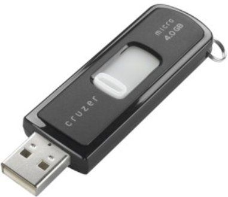
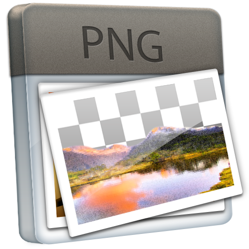
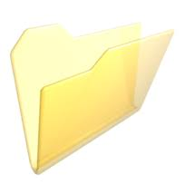

1. Introducción
La práctica de hoy vamos a centrarla en la gestión de dispositivos extraibles (USB) con el ordenador, y la gestión de archivos comprimidos. Una utilidad práctica de este tema sería, por ejemplo, la descarga y archivado de fotografías de nuestra cámara digital.
2. Conexión del dispositivo USB
Os voy a proporcionar una serie de llaveros USB, me gustaría que realizáramos lo siguiente:
- Conecta el dispositivo USB a la ranura correspondiente del PC, y observa la detección que hace Windows XP.
- Una vez detectado, abre el explorador de archivos (o Mi PC) y observa el contenido del llavero USB.
- Copia el contenido del llavero USB a una nueva carpeta del escritorio, creada por ti, y llámala "USB"
3. Carpeta Península ibérica
Abre la carpeta de Península Ibérica que has copiado y observa su contenido.
- ¿Qué tipo de contenido tiene esa carpeta?
- ¿Cuál es la fotografía que más espacio ocupa en el disco?
- ¿Cuál es la fotografía más adecuada para ponerla de fondo de escritorio?
4. Archivos comprimidos
Verás que entre los archivos que has copiado del llavero USB hay también un archivo comprimido llamado imagenes.zip
- Abre el archivo comprimido con Winzip o Winrar.
- Extrae todos los archivos que encuentres en nuestra carpeta USB ubicada en el escritorio.
5. Búsqueda y copia de información
Finalmente, si has conseguido realizar todos los pasos anteriores, busca una imagen de un lugar que consideres digno de visitar, y copiala en el llavero USB.
6. Gracias por la asistencia
Ha sido un placer estas tres clases con vosotros, ¡espero volver a veros pronto!